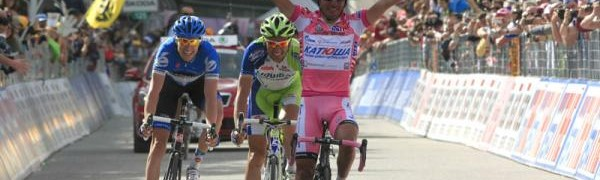
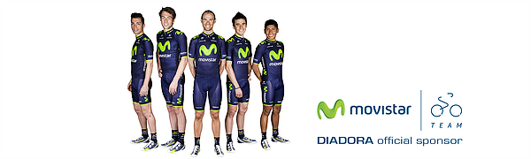
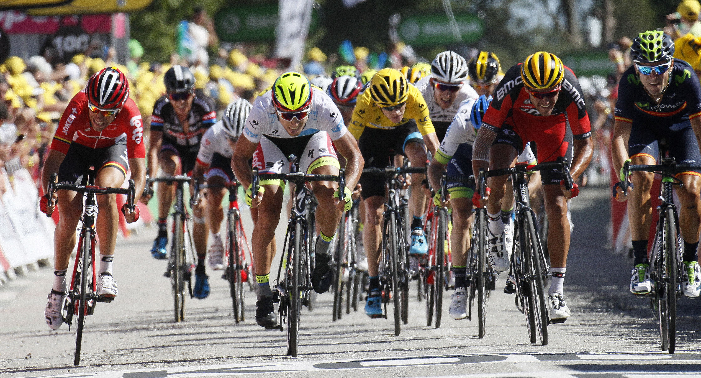

Cuatro segundos de atención

Vale más atacar a tiempo que pronto. La concentración fue la clave de una 5ª y sinuosa etapa del Giro de Italia (Praia a Mare – Benevento) marcada por la tensión o “dureza psicológica” que avanzaba Betancur en la salida. Alejandro Valverde (13º) supo situarse en el último tramo -3,4% con pavé urbano- tras largos 233 km resguardado por todos sus compañeros, una maniobra que resta cuatro segundos respecto a sus rivales directos: Tom Dumoulin (TGA), que sigue de rosa; Vincenzo Nibali (AST), 6º
Valverde, en el lugar correcto

Era la primera jornada con ascensos del Giro de Italia y Alejandro Valverde no falló a la hora de responder como líder de Movistar Team. Sólo el escapado Diego Ulissi (LAM) y el dúo neerlandés formado por Kruijswijk (TLJ) y Tom Dumoulin (TGA), destacados en el último kilómetro, anticiparon al murciano, muy protagonista en un grupo de favoritos que abrió..
Jasha 'sobrevive'; Bala, a salvo

El periplo del Giro de Italia 2016 por tierras neerlandesas acaba para Movistar Team con la tranquilidad de mantener a Alejandro Valverde intacto -el murciano se mantuvo delante incluso en el último kilómetro, codeándose con sprinters, para evitar cualquier corte-. También con la felicidad de ver a Andrey Amador instalado de nuevo en la tercera posición de la general, tras el ganador de hoy Kittel (EQS) y el hasta entonces líder Dumoulin (TGA). Pero la gran noticia, o más